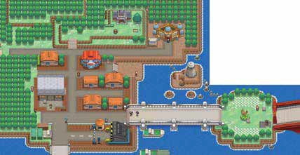

Dancing Toothless | 2023
Press the picture!
What is Dancing Toothless?
Dancing Toothless is an 2D animated character named "Toothless" which is the black-color dragon from How to Train Your Dragon series. The original clip (https://www.youtube.com/shorts/Eze2OVNJRyQ) of this Dancing Toothless is uploaded by YouTuber Cas van de Pol.
